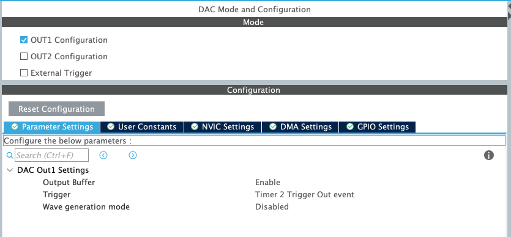
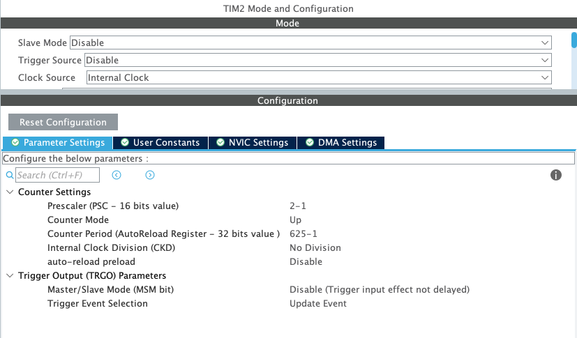

Baptiste LE ROUX - Melvin DUBEE - Tanguy ROUDAUT
Présentation
Explication du projet
Au cours des 30 créneaux dédiés au projet il nous a été demandé d'enregistrer un son de quelques secondes sur la carte STM32 fournie via un micro MEMS et le rejouer sur des hauts-parleurs via le DAC.
Pour nous organiser et avancer progressivement vers le résultat final, nous avons commencé par apprendre les bases, que ce soit sur la configuration de la carte STM32, l'utilisation de composants et périphériques comme le DMA, le DAC etc, ou encore l'utilisation de Git.
Nous avons illustré notre apprentissage dans la rubrique Exemples, comme allumer une LED, afficher un message dans le moniteur série avec l'UART, générer un signal en sortie avec le DAC...
Après avoir atteint une certaine maitrise de ces différents aspects nous avons mis bout à bout nos connaissances en produisant la chaine complète du projet ci-dessous :

flowchart LR
subgraph STM32
SAI
DMA1
DMA2
subgraph Traitement Du Signal
CPU
RAM
end
DAC
end
subgraph Acquisition
MEMS[Micro PDM MEMS]
end
subgraph Restitution
CASQUE[Sortie audio]
end
MEMS-->SAI
SAI-->DMA1
DMA1-->RAM
CPU<-->RAM
RAM-->DMA2
DMA2-->DAC
DAC-->CASQUE
Matériel
Pour mener à bien ce projet, nous avons utilisé :
- une carte STM32F4290I-DISC1
- un micro PDM Adafruit 3492
- une sortie Jack
- un casque


Utilisation
Flashage de la carte
-
À partir de CubeIDE :
Vous pouvez directement cloner notre dépôt puis l’ouvrir à l’aide CubeIDE. Si vous utilisez le même matériel dans ce cas aucun changement n’est nécessaire, il suffit de connecter la carte à votre pc via le périphérique ST-Link et de flasher la carte. -
À partir des binaires :
Connecter la carte à votre pc via le périphérique ST-Link, ce qui devrait vous faire apparaitre un nouveau stockage. Si c’est le cas, il suffit de placer les binaires dans ce stockage comme si on le mettait sur une clé USB.
Enregistrement et diffusion
Une fois que la carte est flashée, l’enregistrement démarre automatiquement. Si vous n’avez pas eu le temps d’enregistrer votre son, vous pouvez appuyer sur le bouton reset pour relancer le programme. Quand vous êtes satisfait de l’enregistrement, il ne reste plus qu’à appuyer sur le user button pour lancer l’audio.
Acquisition
Le PDM
Le PDM (Pulse-Density modulation) soit modulation par densité d’impulsions est utilisée pour représenter un signal analogique en signal binaire. Le principe est le suivant, on a un signal audio sous sa forme analogique que l’on va chercher à enregistrer. Pour cela, on va coder chaque échantillon du signal sur un seul bit. Chaque échantillon est quantifié à une valeur. Si l’échantillon (postion n) à une valeur inférieure à l’échantillon précédent (position n-1) alors son bit sera codé à 0, sinon si sa valeur est supérieure alors son bit sera codé à 1. C’est donc une comparaison à chaque instant d’échantillonnage avec le précédent qui permettra de moduler notre signal audio. Cette méthode à un nom, la modulation delta.

SAI
Le SAI (Serial Audio Interface) est une interface permettant au microcontrôleur de communiquer avec plusieurs dispositifs audio externes, dont les microphones. Sur le STM32, le SAI a une interface PDM dédiée, ce qui permet directement d’acquérir un signal audio en entrée. Pour notre projet, c’est donc cette interface qui nous intéresse. Si on veut acquérir un signal audio, il faut donc que notre microphone soit connecté au SAI en configuration mono et mode de réception maître.
Voici le schéma de connexion d’un microphone en mode mono sur l’interface SAI :

La broche nommée LR sur le schéma ci-dessus est une broche de sélection de canaux du microphone qui peut être connectée soit à Vdd, soit à GND. En fonction du canal sélectionné, on choisit si le microphone émet les données sur les fronts montants ou descendant de l’horloge. Le front d’échantillonnage de l’horloge SAI doit être configuré en conséquence. Selon la documentation (voir ci-dessous), on a le choix entre 16 kHz ou 48 kHz pour Fe, nous avons fait le choix de 48 kHz puisque cela nous induit une meilleure qualité audio. Le front d’échantillonnage de l’horloge SAI sera donc de 3,072 MHz.

Les échantillons audio en entrée sont acquis par la broche de sortie de données (DOUT) du microphone numérique via la broche de données série (SD), sur le schéma ci-dessous on voit que c’est la sortie PE6.

DMA
Le DMA (Direct Memory Access) soit accès direct à la mémoire permet de stocker directement des données venant d’un périphérique en mémoire principale de la machine. C’est-à-dire que le microprocesseur n’intervient pas lors du transfert. La conclusion du transfert de données peut être signalée par interruption, cela sera utile dans le cas de notre projet. Le DMA est surtout utile quand on travaille avec de grandes quantités de données, le processeur peut rapidement être ralenti si tous les octets doivent passer par l’unité centrale. L’utilisation du DMA permettra donc de transférer des données sans qu’aucun code ne soit exécuté.
Voici un schéma explicatif pour mieux comprendre le principe du DMA :
Schéma simplifié d’un transfert de mémoire dans un microprocesseur
flowchart LR
subgraph STM32
SAI
CPU
RAM
DAC
end
CPU<-->SAI
CPU<-->RAM
CPU<-->DAC
Schéma d’un transfert de mémoire avec l’aide du DMA
flowchart TB
subgraph STM32
SAI
DMA1
DMA2
CPU
RAM
DAC
end
SAI<-->DMA1
DAC<-->DMA2
DMA1<-->RAM
DMA2<-->RAM
CPU<-->RAM
Pendant que les données sont transférées avec le DMA, l’unité centrale peut travailler sur d’autres choses. En effet, étant donné que le signal audio est lourd, il est essentiel de traiter les données en même temps que de les passer en mémoire. On va donc procéder de la manière suivante, le tableau de données renseigné à partir du SAI va être scindé en deux parties, la partie MSB et LSB. On verra dans la prochaine section comment traiter ces deux parties.
Mise en pratique
Dans cette partie on va voir dans un premier temps la configuration de l’horloge et du SAI en mode DMA et dans un second temps le code implémenté pour la réception via le SAI en mode DMA.
Configuration horloge du SAI

Configuration du SAI

Configuration du DMA lié au SAI

Code pour l’acquisition du signal audio
#define PDM_DATA_SIZE 8
#define PDM_NB_SAMPLE_BY_FRAME PDM_FRAME_LENGHT/PDM_DATA_SIZE
#define NB_FRAME_IN_PDM_BUFFERSIZE 20
#define PDM_BUFFERSIZE PDM_NB_SAMPLE_BY_FRAME*NB_FRAME_IN_PDM_BUFFERSIZE
uint8_t pdmBuffer[PDM_BUFFERSIZE];
HAL_SAI_Receive_DMA(&hsai_BlockA1, (uint8_t *)pdmBuffer, PDM_BUFFERSIZE/2);
HAL_TIM_Base_Start(&htim2);
Conversion des données PDM → PCM
Le PCM
Le PCM (Pulse Code With Modulation) est un signal numérique produit à la suite d’une chaîne d’opération : échantillonnage, quantification et codage.
Comme on peut le constater sur la figure suivante le signal est échantillonné à une fréquence fe et chaque échantillon représente une impulsion avec une certaine amplitude.

Si l’on compare l’allure d’un signal PDM à celle d’un signal PCM, on remarque deux différences principales :
- La fréquence d’échantillonnage du signal PDM est plus importante que celle du signal PCM
- Le signal PDM possède des amplitudes binaires (0-1) alors que l’amplitude du PCM est numérique.

Conversion
Conversion selon STM
Il existe plusieurs solutions, pour réaliser une conversion PDM vers PCM. Selon la documentation du STM32, il est conseillé de suivre la procédure suivante :
Il faut dans un premier temps utiliser un filtre passe-bas pour convertir les données PDM en PCM. La conversion se fait grâce à un filtre FIR, l’objectif étant de multiplier les échantillons PDM par les coefficients du filtre et de faire une somme pondérée. Finalement, on se retrouve avec des données numériques, c’est-à-dire un signal PCM.

Ce filtre permet également de réduire la fréquence d’échantillonnage, mais potentiellement de manière insuffisante. Pour obtenir la fréquence d’échantillonnage adaptée du PCM, il faut procéder à une décimation, avec un facteur de décimation approprié.

Notre conversion
Dans le cadre du projet, nous avons simplifié la conversion. Nous allons simplement réaliser une décimation. Une décimation tout de même un peu particulière puisqu’en plus de décimer notre signal, on va convertir nos bits en données numériques, c’est-à-dire en PCM.

Comme expliqué précédemment, le PDM est configuré à une fréquence d’échantillonnage de 3,072 MHz, ce qui est beaucoup plus important que la fréquence cible du PCM qui est de 48 kHz. L’objectif est donc de réduire la fréquence du signal PDM.
La décimation permet de réduire la fréquence d’échantillonnage d’un signal en prenant seulement un échantillon tous les n-échantillons :
Pour déterminer le facteur de décimation, on peut appliquer la formule de la figure précédente. Après calcul, on trouve un facteur de décimation de 64. Si on prend un échantillon PDM tous les soixante-quatre échantillons, on obtiendra un signal avec une fréquence de 48 kHz.
Seulement, cette méthode permet uniquement de réduire la fréquence d’échantillonnage du signal, pas de convertir en PDM → PCM. On va compter tous les bits à 1 dans une trame de 64 bits, ce qui nous permettra d’obtenir une valeur entre 0 et 64.
Au final on obtiendra un signal PCM avec un certain nombre d’impulsions, des amplitudes situées entre 0 et 64 avec une fréquence d’échantillonnage de 48 kHz.

Mise en pratique
Variables
Nous avons besoin d’un certain nombre de variables.
- Le
pdmBufferprésenté à la partie précédente qui contient les valeurs PDM du DMA - Le
pcmBuffer, il contiendra les données PCM converties d’un demi DMA - Le
pcmData, il contiendra toutes les données PCM converties.
#define NB_FRAME_IN_PDM_BUFFERSIZE 20
#define PDM_BUFFERSIZE PDM_NB_SAMBLE_BY_FRAME*NB_FRAME_IN_PDM_BUFFERSIZE
#define PCM_BUFFERSIZE NB_FRAME_IN_PDM_BUFFERSIZE/2
#define PCM_SAMPLING_RATE 48000
#define NB_SEC_OUTPUT 1
#define PCM_NB_SAMPLE (NB_SEC_OUTPUT*PCM_SAMPLING_RATE)
uint8_t pdmBuffer[PDM_BUFFERSIZE];
uint32_t pcmBuffer[PCM_BUFFERSIZE];
uint32_t pcmData[PCM_NB_SAMPLE];
Lecture du DMA
Comme expliqué dans la partie de l’acquisition, nous travaillons en demi DMA pour des soucis de stockage et de conversion en temps réel. Quand un demi DMA est plein, les données PDM sont disponibles pour être converties en PCM.
Il faut donc savoir quelle partie du DMA est plein pour procéder à la conversion.
STM nous donne accès à deux fonctions d’interruptions que l’on peut modifier pour mettre des flags à 1.
- Une interruption pour déterminer si la moitié du DMA est plein :
void HAL_SAI_RxHalfCpltCallback(SAI_HandleTypeDef *hsai) - Une interruption pour déterminer si le DMA est plein :
void HAL_SAI_RxCpltCallback(SAI_HandleTypeDef *hsai)
Par exemple, si on utilise c’est fonctions d’interruptions avec deux flags, cplt et half. Si half vaut 1, alors la première moitié du DMA est prête, si c’est cplt dans ce cas c’est la seconde.
void HAL_SAI_RxCpltCallback(SAI_HandleTypeDef *hsai){
cplt = 1;
half = 1;
}
void HAL_SAI_RxHalfCpltCallback(SAI_HandleTypeDef *hsai){
cplt = 0;
half = 1;
}
Maintenant que l'on a des flags, il ne reste plus qu’à les utiliser pour réaliser le traitement. Si half vaut 1, alors on commence le traitement, si cplt vaut 0, alors on prend la première moitié, sinon, la seconde.
while (recording){
if(half){
half = 0;
pdm2pcm((uint8_t*)(pdmBuffer+cplt*(PDM_BUFFERSIZE/2)), pcmData);
}
}
A chaque interruption, on exécute la fonction de conversion pcm2pdm avec en premier argument les données PDM (données dans le DMA) à convertir et en deuxième argument un tableau contenant les données PCM convertis.
C’est dans le premier argument, où l’on donne le tableau des valeurs pdm qu’il faut spécifier sur quelle moitié du DMA on va travailler.
- Si c’est la première moitié, il suffit de lui donner le tableau
pdmBufferen entier. C’est-à-dire que si notre tableau est de longueur 100, alors on commence à l’élément 0 et dans notre fonction on ira donc jusqu’à l’élément 49. - Si c’est la seconde moitié, alors on donne le tableau
pdmBuffer+PDM_BUFFERSIZE/2, c’est-à-dire que si notre tableau est de longueur 100, alors on commence à l’élément 50 et dans notre fonction on ira donc jusqu’à l’élément 99.
Conversion des données
Il est important de noter que dans la partie acquisition, nous avons configuré le SAI avec une longueur de frame de 64 bits et un type de données sur 8 bits. Nos valeurs dans le DMA sont donc sur 8 bits. Nous on souhaite faire la somme du nombre de bit à 1 dans une frame (64-bits), pour cela on va créer un pointeur sur 64 bits vers notre tableau de 8 bits qui contient les données PDM: uint64_t* pdmFrameBuffer = pdmBuffer;
Maintenant que l’on a un pointeur de 64-bits sur notre tableau de 8-bits, on peut parcourir toutes les frames de notre acquisition à l’aide d’une boucle for.
Pour compter les bits à 1 on utilise une fonction intégrée au compilateur: __builtin_popcount, cela nous permet donc d’obtenir une valeur entre 0 et 64. Chaque frame de 8 échantillons PDM se retrouve réduit à 1 échantillon PCM.
Il ne faut pas oublier que ces échantillons sont ajoutés au tableau contenant la totalité des échantillons PCM.
void pdm2pcm(uint8_t* pdmBuffer, uint32_t* pcmData){
uint64_t* pdmFrameBuffer = pdmBuffer;
for (int frameNbr=0; frameNbr<NB_FRAME_IN_PDM_BUFFERSIZE/2; frameNbr++){
pcmData[pcmDataIndex++] = (uint32_t)__builtin_popcount(pdmFrameBuffer[frameNbr]);
}
}
Arrêt de l’enregistrement
Les données d’un demi DMA sont maintenant convertibles grâce à notre fonction, mais il reste un problème. On a un tableau pcmData qui a une longueur de 48 000 échantillons, soit une seconde d’enregistrement avec une fréquence d’échantillonnage de 48 kHz. Si pcmData est plein, dans ce cas il faut pouvoir arrêter l’enregistrement.
On a donc le code suivant :
while (recording){
if(half){
half = 0;
pdm2pcm((uint8_t*)(pdmBuffer+cplt*(PDM_BUFFERSIZE/2)), pcmData);
if(pcmDataIndex >= PCM_NB_SAMPLE){
recording = 0;
HAL_SAI_DMAStop(&hsai_BlockA1);
}
}
}
Diffusion
La dernière étape de notre chaine de traitement consiste à diffuser le son enregistré précédemment dans la mémoire de notre STM32. Pour ce faire, nous devons piloter le DAC via le DMA et générer le signal vers une sortie audio, casque, haut-parleurs...
DAC
Le DAC ou Digital-to-Analog Converter est un composant matériel qui permet de convertir des signaux numériques en signaux analogiques. Sur une carte STM32, il peut être utilisé pour produire des signaux analogiques pour des applications telles que la génération de formes d'onde, la synthèse audio, le contrôle de moteurs, etc.
Le DAC peut être configuré pour fonctionner avec différentes résolutions (8, 10, 12 bits), des tensions de référence internes ou externes, et des modes de sortie de signal (unipolaire ou bipolaire).
Amplification du signal PCM
Le signal de sortie peut être amplifié pour réhausser le signal. On utilise un amplificateur en spécifiant un gain. Pour déterminer ce dernier, on s'appuie sur la partie décimation. Nous avons déterminé précédemment un facteur décimation de 64, donc nos échantillons on une valeur allant de 0 à 64. Or le DAC a une résolution fixée à 12 bits ce qui impose une valeur entière maximum de 4096. On peut donc déterminer la valeur maximum du gain par le calcul suivant.
$$ Gain_{max} = \frac{4096}{64} = 64$$
Mise en pratique
Configuration du DAC
On configure le DAC sur la carte en choisissant une sortie, par exemple OUT1 indiquant la pin PA4. Dans notre cas nous activons aussi le DMA et un timer, et un bouton pour jouer le signal enregistré.


Nous avons configuré notre SAI pour une acquisition d'un signal sonore avec une fe de 48 kHz, il est donc nécessaire de conserver cette configuration et de la reproduire pour le DAC.
$$ (PSC+1)(ARR+1)=\frac{CLK_{freq}}{OutputFrequency}=\frac{80MHz}{48kHz}=1666.66$$
Après calcul, si on choisit une fréquence de 80Mhz, il nous faut un Auto Reload Register de 1665 et un Prescaler de 0 pour obtenir une fréquence d'échantillonage de 48kHz

Ajout de l'amplification
Avant de générer le signal, nous avons fait le choix de l'amplifier en fixant la valeur de gain à 80, ce qui est un bon compromis pour réhausser le niveau du signal en minimisant la saturation.
for (int i = 0; i < PCM_NB_SAMPLE; i++){
pcmData[i] = pcmData[i] * GAIN;
}
Ajout dans le code
Dans la boucle While du code, on ajoute la condition pour jouer l'enregistrement.
/* USER CODE BEGIN WHILE */
while (1)
{
if (HAL_GPIO_ReadPin(GPIOA, GPIO_PIN_0)){
HAL_DAC_Start_DMA(&hdac, DAC_CHANNEL_1, (uint32_t*)pcmData, PCM_NB_SAMPLE, DAC_ALIGN_12B_R);
HAL_Delay(NB_SEC_OUTPUT*1000);
HAL_DAC_Stop_DMA(&hdac, DAC_CHANNEL_1);
}
HAL_Delay(500);
/* USER CODE END WHILE */
}
Si l'utilisateur appuie sur le bouton pin0 de la carte, on lance la diffusion du signal avec la fonction HAL_DAC_Start_DMA(). En paramètre, on a renseigné le channel, la data, le nombre d'échantillons et la résolution de notre DAC.
Le signal se joue sur HAL_Delay(NB_SEC_OUTPUT*1000);, ce qui représente la durée du signal enregistré avant de se couper avec la fonction DAC HAL_DAC_Stop_DMA().
Filtrage
Comme on peut le constater sur l'image suivante, un signal PDM a une fréquence d'échantillonnage beaucoup plus importante qu'un signal PCM.

Réaliser une décimation pour réduire cette fréquence et convertir notre signal PCM permet d'obtenir un signal audible, mais pas parfait. Dans un premier temps on peut constater qu'il y aura une perte de certaine information, mais le principal problème et la conservation de certaine de ces hautes fréquences qui peuvent causer du bruit ou encore une qualité type talkie-walkie.
L'objectif de cette partie consiste donc à obtenir un signal de meilleure qualité, mais pour ce faire, il est important de comprendre correctement les étapes pour procéder au filtrage à l'aide de Matlab.
Les effets d'un signal PDM
C'est étapes ne seront pas directement liées à notre projet, nous allons partir d'un enregistrement audio et nous allons le convertir en PDM pour comprendre les effets de cette modulation et comment les réduire.
Lecture d'un signal audio
Dans un premier temps nous devons lire ce signal audio. On pourra également extraire certaines données essentielles qui pourront nous servir pour la suite.
[x, fs] = audioread('bond.wav');
Ts = 1/fs;
N = length(x);
t = [0:Ts:(N-1)*Ts];
duree = N/fs

Conversion du signal audio vers un signal PDM
Il est nécessaire d'échantilloner à nouveau notre signal. La fréquence actuelle ne correspond pas à celle que l'on utilise dans notre projet, une fréquence de 3.072MHz.
fs_new = 3.072e6;
x_resampled = resample(x, fs_new, fs);
Une fois que l'on a la bonne fréquence, on peut réaliser une modulation PDM à l'aide d'une fonction que nous avons réalisée, cette fonction est inspirée de l'algorithme donné par Wikipédia.
function result = modulation_PDM(s, qe)
s_mod = zeros(1, length(s));
for i = 1:length(s)
qe = qe + s(i);
if qe > 0
s_mod(i) = 1;
else
s_mod(i) = -1;
end
qe = qe - s_mod(i);
end
result = s_mod;
end
x_mod = modulation_PDM(x_resampled, 0);
- Orange → Signal PDM
- Bleu → Signal Audio sur-échantillonné
On remarque facilement que le signal PDM a majoritairement des hautes fréquences comparé au signal audio sur-échantillonné. De plus, on ne reconnaît même plus notre allure temporelle que nous avions précédemment.
Traitement du signal PDM
Dans notre projet, nous avons utilisé une décimation pour réaliser la conversion PDM → PCM. Ici, on va optimiser ce processus que nous avons simplifié, à l'aide d'un filtre passe-bas. On remarque au final que nous allons réaliser ce qui est préconisé par STM (cf conversion).
Pour ce faire, on va appliquer un filtre passe-bas à moyenne glissante sur soixante-quatre points, ainsi qu'un sous échantillonnage avec un facteur de 64, ce qui correspond également au facteur décimation que nous avons utilisé dans notre projet.
$$ \frac{3.072MHz}{64} = 48kHz$$
On procède donc au filtrage de la manière suivante:
nb_points = 64;
ech_factor = 64;
filtre = ones(1, nb_points)/ech_factor;
x_filtered = filter(filtre, 1, x_mod);

- Orange → Signal PDM traité
- Bleu → Signal Audio
Grâce au filtre nous avons retrouvé l'allure de notre signal audio, mais la représentation fréquentielle démontre que nous avons toujours une présence importante des hautes fréquences. Comme expliqué plus tôt, ce sont les hautes fréquences obtenues à la suite de notre décimation qui réduisent la qualité de notre signal. On constate donc que ces dernières sont bel et bien présentes, l'objectif va donc être de les filtrer.
Filtrage d'un signal PDM
À présent l'objectif est donc de supprimer les composantes fréquentielles haute-fréquence du signal. Pour ce faire, nous allons utiliser un filtre passe-bas.
Design du filtre
Nous allons utiliser les données précédemment obtenues suite aux analyses pour designer notre filtre à l'aide de l'outil Matlab: filterDesigner
Cet outil nous aide dans la création du filtre pour vérifier si nos paramètres sont bons, mais également pour générer le code associé. Ce code nous permettra de filtrer notre signal PDM
function coeffs_fir = createFIRFilter
Fs = 48000;
Fpass = 5000;
Fstop = 6000;
Dpass = 0.057501127785;
Dstop = 0.1;
dens = 20;
[N, Fo, Ao, W] = firpmord([Fpass, Fstop]/(Fs/2), [1 0], [Dpass, Dstop]);
b = firpm(N, Fo, Ao, W, {dens});
Hd = dfilt.dffir(b);
coeffs_fir=Hd.Numerator;
Utilisation du filtre
Le principe est le même qu'avec le premier filtre, mais cette fois-ci il faut faire appel à notre fonction précédemment créée
fir_filter = createFIRFilter();
x_filtered_2 = filter(fir_filter, 1, x_filtered);

- Orange → Signal PDM traité
- Bleu → Signal Audio
- Jaune → Signal PDM filtré
On remarque facilement les effets du filtre, nous avons supprimé les hautes fréquences provenant du signal PDM tout en préservant l'allure du signal audio. Si on écoute les trois audios, une nette amélioration est à noter.
Filtrage de notre signal PCM
Maintenant que nous avons calculé un filtre qui permet de filtrer les hautes fréquences provenant de notre signal PDM, nous pouvons reproduire ce code dans notre projet en utilisant les paramètres donnés par matlab. L'objectif est donc de réaliser le schéma suivant :

Pour ce faire nous pouvons réaliser une fonction qui va nous permettre de calculer les coefficients du filtre FIR et une autre pour appliquer le filtre sur chaque échantillon PCM.
#define FILTER_CUTOFF_FREQUENCY 6000
#define FILTER_SAMPLING_FREQUENCY 48000
#define FILTER_NB_COEF 64
void calcFIR(float* FIRcoef, int nbCoef, float fc, float fe){
float normalizedFc = 2.0f * PI * fc / fe;
float sinc, hamming;
for (int coefN = 0; coefN < nbCoef; coefN++) {
if (coefN == (nbCoef-1)/2) {
FIRcoef[coefN] = normalizedFc / PI;
} else {
sinc = sinf(normalizedFc * (coefN - (nbCoef-1)/2)) / (PI * (coefN - (nbCoef-1)/2));
hamming = 0.54f - 0.46f * cosf(2.0f * PI * coefN / (nbCoef-1));
FIRcoef[coefN] = sinc * hamming;
}
}
}
void FIR(float* FIRcoef, int nbCoef, uint8_t* pcmData){
for (int pcmIndex = 0; pcmIndex < PCM_NB_SAMPLE; pcmIndex++){
float sum = 0;
for(int nCoef = nbCoef; nCoef < nbCoef; nCoef++){
sum += pcmData[pcmIndex+nCoef] * FIRcoef[nCoef];
}
pcmData[pcmIndex] = (uint32_t)sum;
}
}
Un appel à nos fonctions nous permettront d'obtenir notre signal PCM filtré, les hautes fréquences seront donc retirées.
float FIRcoef[FILTER_NB_COEF];
calcFIR(FIRcoef, FILTER_NB_COEF, FILTER_CUTOFF_FREQUENCY, FILTER_SAMPLING_FREQUENCY);
FIR(FIRcoef, FILTER_NB_COEF, pcmData);
Il est important de noter que nous n'avons pas pu tester cette dernière version de notre projet
Exemple
Si certaines captures d'écran ne correspondent pas avec le MCU du STM32F4290I-DISC1, c'est parce que certain de ces exemples ont été réalisé sur une nucleo-64. Les principes de fonctionnement et de configuration restent les mêmes, seuls les pins sont différents.
Pour débuter ce projet, nous avons, pu découvrir la carte STM32 et ses différentes possibilités à l'aide d'exemples:
Clignotement d'une led
Préparation du projet

Configuration de la pin connectée à la LED

Modification du code
/* USER CODE BEGIN WHILE */
while (1)
{
HAL_GPIO_TogglePin(GPIOA, GPIO_PIN_5);
HAL_Delay(1000);
/* USER CODE END WHILE */
}
Clignotement d'une LED avec un bouton
On considère que la configuration de la LED a déjà été faite avec l'exemple 'toggle_led'
Configuration de la pin connectée au BP
Modification du code
/* USER CODE BEGIN WHILE */
while (1)
{
if (HAL_GPIO_ReadPin(GPIOC, GPIO_PIN_13)) {
HAL_GPIO_WritePin(GPIOA, GPIO_PIN_5, 1);
}
else {
HAL_GPIO_WritePin(GPIOA, GPIO_PIN_5, 0);
}
HAL_Delay(100);
/* USER CODE END WHILE */
}
UART - Affichage d'un message à l'appui du bouton
On considère que la configuration de la LED et du BP a déjà été faite avec l'exemple 'pushbutton_led'
Configuration de l'UART
Modification du code
/* USER CODE BEGIN 2 */
uint8_t *tx;
uint8_t cnt = 0;
/* USER CODE END 2 */
/* Infinite loop */
/* USER CODE BEGIN WHILE */
while (1)
{
if (HAL_GPIO_ReadPin(GPIOC, GPIO_PIN_13)) {
HAL_GPIO_WritePin(GPIOA, GPIO_PIN_5, 0); // led
}
else {
HAL_GPIO_WritePin(GPIOA, GPIO_PIN_5, 1); // led
cnt++;
sprintf(tx, "You have push the BP for the %d time\r\n", cnt);
HAL_UART_Transmit(&huart1, tx, sizeof(tx), 100);
}
HAL_Delay(200);
/* USER CODE END WHILE */
/* USER CODE BEGIN 3 */
}
Génération d'un signal de 1Khz
Configuration du DAC

On configure en plus le DMA qui sera associé au DAC

Configuration du Timer

Pour choisir les paramètres du timers pour une fréquence voulue on peut appliquer les formules suivantes :
$$ TriggerFrequency = OutputWaveFrequency * Ns$$
avec Ns le nombre de sample de notre signal
$$ (PSC+1)(ARR+1) = \frac{F_{CPU}}{TriggerFrequency}$$
Exemple: Pour un sinus avec une lookup table de 128 samples
Si l'on souhaite une fréquence de 1Khz:
$$ TriggerFrequency = OutputWaveFrequency * Ns = 1.10^3 * 128 = 128.10^3$$
$$ (PSC+1)(ARR+1) = \frac{F_{CPU}}{TriggerFrequency} = \frac{80.10^6}{128.10^3} = 625$$
On peut donc choisir un prescaler de 0 est une période de 625.

Si l'on souhaite une fréquence de 500Hz:
$$ TriggerFrequency = OutputWaveFrequency * Ns = 500 * 128 = 64.10^3$$
$$ (PSC+1)(ARR+1) = \frac{F_{CPU}}{TriggerFrequency} = \frac{80.10^6}{64.10^3} = 1250$$
On peut donc choisir un prescaler de 0 est une période de 1250. On sait que 1kHz, c'est deux fois 500Hz. Au lieu de refaire le calcul on aurait simplement aussi pu garder une période de 625 et ajouter par le suite un prescaler de 2.

Code
/* USER CODE BEGIN 2 */
uint32_t Wave_LUT[128] = {
2048, 2149, 2250, 2350, 2450, 2549, 2646, 2742, 2837, 2929, 3020, 3108, 3193, 3275, 3355,
3431, 3504, 3574, 3639, 3701, 3759, 3812, 3861, 3906, 3946, 3982, 4013, 4039, 4060, 4076,
4087, 4094, 4095, 4091, 4082, 4069, 4050, 4026, 3998, 3965, 3927, 3884, 3837, 3786, 3730,
3671, 3607, 3539, 3468, 3394, 3316, 3235, 3151, 3064, 2975, 2883, 2790, 2695, 2598, 2500,
2400, 2300, 2199, 2098, 1997, 1896, 1795, 1695, 1595, 1497, 1400, 1305, 1212, 1120, 1031,
944, 860, 779, 701, 627, 556, 488, 424, 365, 309, 258, 211, 168, 130, 97,
69, 45, 26, 13, 4, 0, 1, 8, 19, 35, 56, 82, 113, 149, 189,
234, 283, 336, 394, 456, 521, 591, 664, 740, 820, 902, 987, 1075, 1166, 1258,
1353, 1449, 1546, 1645, 1745, 1845, 1946, 2047
};
HAL_DAC_Start_DMA(&hdac, DAC_CHANNEL_1, (uint32_t*)Wave_LUT, 128, DAC_ALIGN_12B_R);
HAL_TIM_Base_Start(&htim2);
/* USER CODE END 2 */